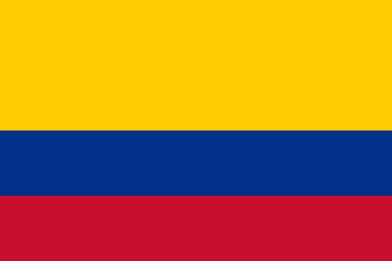
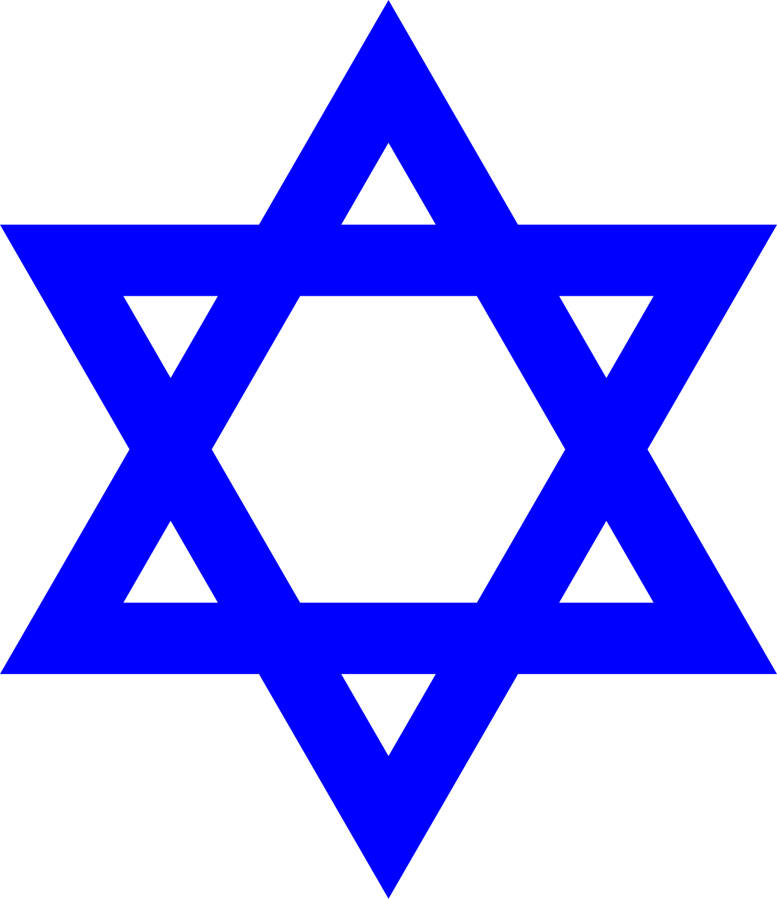

Did you know that only 0.009% of the Colombian population is Jewish? (5,000/52,695,952) Yet in this small class, there is one!
My mom's grandparents and my dad's maternal great grandparents immigrated from what is now Romania, Ukraine, and Russia in search of new opportunities
The Colombian Flag is divided into the three primary colors, yellow (which takes up half of it) for the people’s hard work and prosperity found, blue (for the quarter below it) for desired peace and the beauty of the surrounding water, and red (the last fourth) for individual sacrifice and blood spilled.
The Star of David is a compound of two equilateral triangles or also known as a hexagram that is emblematic of the Jewish ethnoreligion!